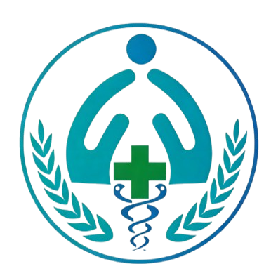

© 青医附院 版权所有 | 医疗信息管理
就诊日期：2013年02月10日 编号：20130210078
| 姓名 | 宋以然 | 性别 | 女 | 年龄 | 16岁 |
| 民族 | 汉 | 籍贯 | 临渊省青州市 | 职业 | 高一年级学生 |
| 主诉 | 反复噩梦、情绪低落3月余，伴兴趣减退、注意力不集中1月 | ||||
患者3月前因听闻恶性事件后出现睡眠障碍，主要表现为入睡困难，夜间反复做噩梦，梦境多为事件重现，惊醒后心慌、出汗，难以再次入睡，每日睡眠时间约4-5小时。近1月来出现明显情绪低落，对既往感兴趣的阅读、绘画等活动丧失兴趣，不愿与同学、家人交流，上课注意力不集中，成绩较前明显下降。自述"心里难受"、"总想哭"，曾有自伤念头（未付诸行动）。无发热、头痛、抽搐等症状，饮食量较前减少约1/3，体重近1月下降约2kg。家属曾自行给予安神类中成药，效果不佳，为求进一步诊治来我院门诊。
平素体健，否认手术、外伤、输血史，否认食物、药物过敏史。
生长发育正常，适龄入学，学习成绩较好，性格偏内向，无不良嗜好。父母、姐妹关系和睦，家庭环境良好，否认家庭暴力、虐待等情况。
情绪低落，面部表情少，语音低，语速慢，思维联想迟缓，未引出幻觉、妄想等精神病性症状。存在明显的创伤后应激反应：对与恶性事件相关的场景、语言表现出明显回避行为。
SCL-90量表测评：抑郁因子分2.8，焦虑因子分2.5，恐怖因子分2.7；PTSD筛查量表阳性。